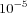

This method also known as the simplex method is due to Nelder and Mead [
Nelder65]. A simplex is a polytope of
N+1 vertices in
N dimensions. The objective function is evaluated at each vertex. Dependent on these calculated values a new simplex is constructed. The simplest step is to replace the worst point with a point reflected through the centroid of the remaining
N points. If this point is better than the best current point, then we can try stretching exponentially out along this line. On the other hand, if this new point isn't much better than the previous value then we are stepping across a valley, so we shrink the simplex towards the best point.
Options for Nelder - Mead
- Iteration Limit
- This parameter is a positive integer to determine the maximum number of iterations the method is to perform. The default value is '200'.
- Tolerance
- This parameter is a positive number and provides an alternative termination criteria. If the variance of the values of the objective function at the vertices of the current simplex is smaller than the tolerance the algorithm stops. The default is ''.
- Scale
- This parameter is a positive number and determines the size of the initial simplex. The edges of the polytope are inverse proportional to the scale, i.e., a larger value makes the initial simplex smaller. The default is '10'.